When you put one if statement inside the body of
another if statement, you have a nested
if statement. You can do the same thing with loops.
As you'd expect, these are called nested loops.
When you stick one loop inside another loop, the first loop
encountered is called the outer loop, and the
next is called the inner loop.
Here's an example of a pair of nested for
loops that print a multiplication table. This is taken from
the console application, TimesTable.java:
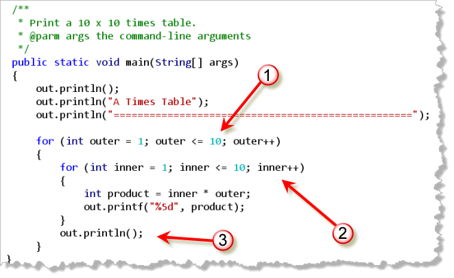
With a the nested loops shown here, every repetition of the outer loop (1) contains ten repetitions of the inner loop (2). Every time the outer loop goes round once, the inner loop goes through it's entire set of repetitions. Notice that inside the inner loop, each value of product
is printed to the console window using the print()
statement (so each value appears on the same line), and formatted
using printf(), using a field width specifier,
so that both the small numbers and the large numbers take the same
amount of space on the line, and so that the columns line up.
After the inner loop finishes, the outer loop contains one more
statement, a plain println() that advances the
cursor to the next line.
Often, you'll find it easier to understand a nested loop, by reading it "from the inside out". Figure out what the inner loop does first. Then, for every repetition of the outer loop, perform the inner loop actions.
Here's what the program looks like when you run it:
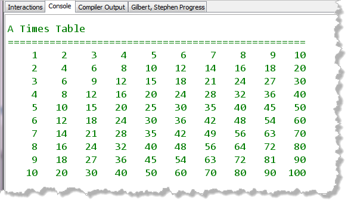
Improvements
A first improvement would be to label both the rows and
columns in our table. Fortunately, that's pretty easy
because we can use the counter variables and some "constants"
like this:
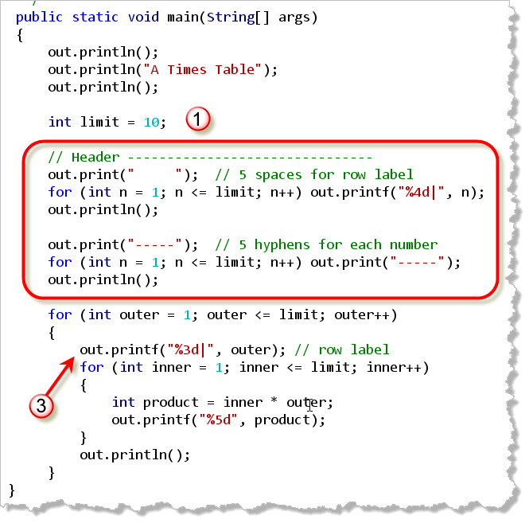
Notice that:- I've replaced the literal magic number with
a variable (
limit) and then used that variable over and over. (I could have made it astaticclass-wide constant, but I'm going to make the program interactive in a sec, so I just made it a local variable for now.) - I've addded a set of sequential
forloops to print the column labels and the separator that appears below it. - I've added a single
print()statement, inside the outer loop and before the inner loop that is used to print the row labels.
Here's what the program looks like after this improvement:
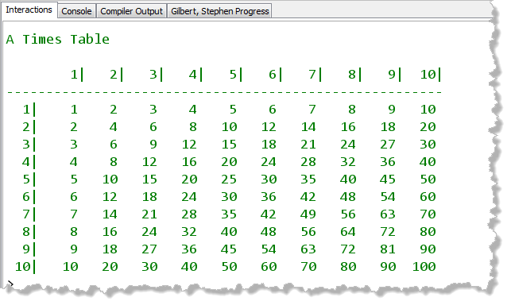
Interactive Times Table
We can make the program interactive by just asking
the user for the upper limit, like this:
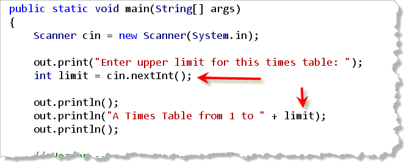
Here's what that looks like when it runs with a limit of 12: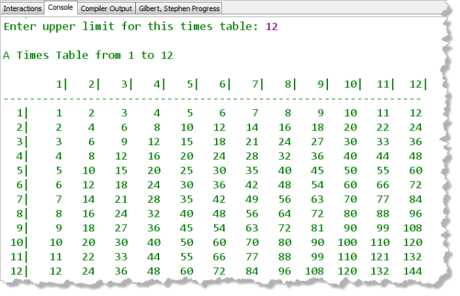
Eliminate Redundancy
Finally, notice that each product in the table appears twice: once when we multiply the row by the column and again when we multiply the column by the row. We can eliminate this redundancy by using the outer loop counter as the inner loop limit.
In other words, the inner loop will no longer go from
1 to limit each time, but will go from
1 to outer; the number of inner loop repetitions
will vary in response to the outer loop counter variable,
like this:
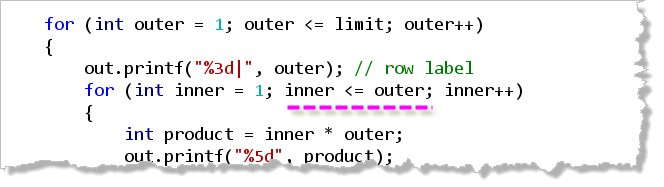
Here's what that looks like when it runs:
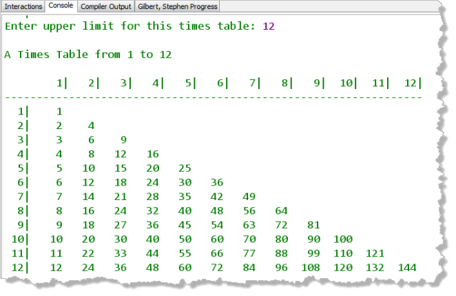
Labeled break and continue
One of the problems with nested loops is that the
break and continue statements stop
"working." Actually, they don't stop working, exactly; they just
don't work quite the way you'd like. Here's the problem.
Both break and continue work on
the current loop. That means, when you are in an inner
loop, a break statement only exits the inner loop,
it doesn't get you out of the outer loop. Java has a facility
to address this deficiency, called the labeled break and
the labeled continue. Here's how they work:
- Before each loop, add a label. A label is simply an identifier that ends in a colon.
- Inside the loop, use the name of the label, along
with the keyword
breakorcontinue, to jump to the loop following the label.
Here's an example:
// Labeled break and continue
int count = 0;
Outer: // label ends with a colon
for (int outer = 1; outer < 1000; outer++)
{
for(int inner = 1; inner < 1000; inner++)
{
count++;
if ( inner % 2 == 0) continue;
if ( inner % 201 == 0 ) break;
if ( outer % 25 == 0 ) continue Outer;
if ( outer % 51 == 0 ) break Outer;
}
}
Can you follow the flow of control in this nested loop? Let's analyze it:
- The outer loop goes from 1 to 999, and for every revolution
of the outer loop, the inner loop should also go around 999
times. If there were no
breaksorcontinues, then the loop would repeat 998,001 times. - In the inner loop, every even value where (
inner % 2 == 0) usescontinueto skip back to the update expression of the inner loop. However, wheninnerreaches 201 (an odd number)breakends the inner loop. The inner loop, then, never executes more than 201 times per revolution of the outer loop. - On the 25th repetition of the outer loop, there is a
labeled
continue. The target of thiscontinueis the labelOuter. This causes a jump to the expressionouter++, (after updating count) and the 25th and 50th iterations of the inner loop are skipped. - Finally, on the 51st repetition of the outer loop, the
labeled
breakis encountered. This jumps to the statement following the closing brace of the loop labeled byOuter.
The result? The variable count records 201
iterations of the inner loop times 48 iterations of the outer
loop, plus 3 entries to the inner loop with early exit (two
continue Outer and one
break Outer). The final total for
count is 9,648 instead of 998,001.
If you find it confusing and difficult to follow the flow of
control with all of these breaks and continues, then you're
starting to get an idea of what early programmers had to go
through to understand complex programs that contained
spaghetti code like this, and why using
jump statements is generally discouraged.
Leap Before You Look
In addition to the for and while loops,
Java also has a loop that performs its boolean test
after the loop body, instead of before. This loop, the
do-while loop illustrated here,
will always execute the statements inside its body at least once.
 The body of the
The body of the do-while loop appears
between the keywords do (which precedes the
loop body) and while. Like all loops, the body of
the do-while loop can be a single
statement, ending with a semicolon, or it can be a compound
statement enclosed in braces. As with the other loops, you'll
have a more fulfilling life if you train yourself to always use
a compound (brace-delimited) loop body.
The do-while loop's boolean
condition follows the while keyword. As with
all selection and iteration statements in Java, the
boolean condition must be enclosed in parentheses,
which are part of the statement syntax. In the
do-while loop, the boolean
condition is followed by a semicolon, unlike the while
loop, where following the condition with a semicolon can
lead to subtle, hard to find bugs.
The do-while loop is often employed
by beginning programmers, because, for some reason, it seems
more natural. If you find yourself in this situation, however,
you should think twice. 99% of the time, a while
loop or a for loop can be employed to better effect
than using a do-while. In fact, except
for salting your food...
 which should always be done before
tasting, there are relatively few other situations where a
test-at-the-bottom strategy is superior to
"looking before you leap."
which should always be done before
tasting, there are relatively few other situations where a
test-at-the-bottom strategy is superior to
"looking before you leap."
GuessOMatic II
One application of a do-while loop is an
ATM-type situation. You've got your money or made your
deposit, and, instead of giving you your card back, the
machine asks you "Do you want another transaction?".
This is easily handled with a do-while loop.
Let's employ this technique to make the GuessOMatic more
like its Vegas cousins. When we start the game, we'll ask
the user for a deposit. Then, at the end of each game,
we'll let them cash out, deposit more money or play again.
Begin by saving your finished GuessOMatic (from Section 9.1—Sentinel Loops) to a new file (GuessOMatic2.java). Be sure to change the class name when you do that. Then make these changes.
The do-while Loop
Start by "wrapping" all of the existing code in the
GuessOMatic run() method
in a do-while loop, starting at the line
marked (1) in this picture:
 Before the new loop (in the section marked (2)):
Before the new loop (in the section marked (2)):
- Create a
doublevariable,bankRolland initialize it by asking for an initial deposit. (I'll leave writing the code to put the charge on the player's MasterCard as an "exercise for you, the reader".) - Create a
booleanvariable namedplayAgainand initialize it tofalse.
Inside your new do-while loop, at the very top,
(right before the existing
initialization statements), subtract the dollar from the
bankroll for playing the game. This is marked (3) in the picture.
At the end of the loop, use the playAgain
variable as the flag bounds
in the while portion of your do-while
loop, like this:
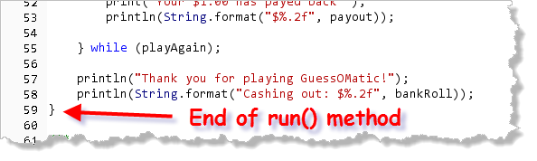
Then, after the loop, print a "Thank You" message along with the value of the player's bankroll.Controlling the do-while Loop
Inside the very end of your do-while loop,
you'll place the code that controls the next repetition of the game,
after the existing code and before the while
condition that ends the loop:
 Here's what our code needs to do:
Here's what our code needs to do:
- First, we need to add the winnings (if any) back to the user's bankroll.
- Next, we have two possibilities. If they still
have enough money left to play another game, ask them if
they want to continue. Store the result in a
Stringvariable. Then, use that variable to initialize theplayAgainflag variable. I'm assuming they'll enter something that starts with a "Y" to continue. - If they don't have enough money to play again,
we don't want to just drop them out. Instead, ask them
to deposit some more money. Then, set the
playAgainflag using the Boolean expressionbankRoll > 1.0.
Limit Testing
Now that you know the syntax of
the while and
do-while, let's look at one final kind of bounds:
the limit bounds. A limit bounds is a natural bounds
in many mathematical, graphical and financial applications.
So, what, exactly is a limit bounds? A limit bounds
is a condition that occurs when one more repetition of the
loop would either get you no closer to the goal or would
actually lead you astray. Limits can be exact values (reducing
a number to zero, for instance), boundaries (exceeding an
upper size limit), or relative values (the difference between
two successive calculations is less than .00000001 percent).
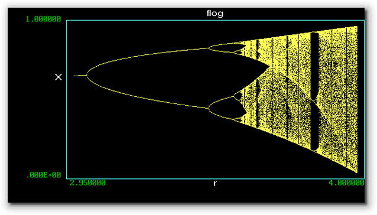
Here are some common limit loop bounds:
- Reduction loops. Methodically reduce a number to zero, or less than some known value. The algorithm for integer division by subtraction is an example of this.
- Successive approximation methods. Each time a calculation is performed, the result is compared to a previous calculation. The bound is reached when two successive calculations yield approximately the same results.
- Bisection methods. These calculate mathematical approximations. The limit is set by approaching to within some tiny amount of an answer that is known to be correct.
- Non-convergence tests. These are often the necessary bounds applied to the other techniques, to make sure they haven't gone astray.
An Example
Loops that involve limit bounds are mostly mathematical. These include things like finding the greatest common denominator (gcd) using Euclid's algorithm, calculating square roots using Newton's method, or approximating pi, using the Buffon's Needle experiment.
All of these are fairly difficult if you're uncomfortable with math. My goal is for you only to recognize and apply a limit loop, so I'll show you a simpler example.
Let's write a program that allows you to
use a limit loop that allows you to add up the digits in an
integer of any size. (We won't handle non-digit characters
like the sumDigits() homework assignment this week,
which adds up the digits in a String parameter.)
We'll call this new program SumDigits2, just so you don't
confuse it with the earlier version. You'll find
the completed program in this chapter's code folder.
The Concept
 The concept behind the program is simple. When you use integer
division to divide the number
The concept behind the program is simple. When you use integer
division to divide the number n by ten, the
remainder is the single right-most digit, while the
quotient consist of the remaining digits on the left.
If we repeatedly perform this operation, eventually, n will reach 0. This is our limit.
The Code
The program begins with
some input. Here I've told the user to enter an integer
between 1 and the largest possible integer:
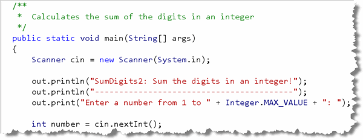
I used theInteger class constant, rather than hard-coding
the maximum number in the prompt, and then used the
Scanner nextInt() method to read the user's
response, storing the result in the int variable
number.
The loop itself consists of three sections

- Before the loop, I declare and initialize the
precondition variable
sumto 0. I also save the value ofnumberin a new variable,original, since the "reduction" algorithm will destroynumberwhen it is finished. - I used a
do-whileloop for this problem (although I could have used awhileloop instead). The bounds of the loop is the limit,number > 0. Inside the loop I first add the right-most digit to the sum, and then remove the digit, moving closer to the limit bounds, by dividingnumberby 10. - Finally, after the loop is finished, I print
both the number and its sum. Since we reduced the variable
numberto 0, I must use the variableoriginalto report the original number entered.
Here's what the program looks like when it runs:


Nesting and Limits Summary
- Nested loops, (commonly used with for loops), place one loop inside another. The enclosing loop is known as the outer loop, while the enclosed loop is called the inner loop.
- With nested loops, the inner loop completes an entire cycle of iterations for each iteration of the outer loop. For instance, if both loops repeat 10 times, the inner loop will repeat 100 times, 10 times for each trip through the outer loop.
- The labeled versions of
breakandcontinuecan be sometimes be used with nested loops, but can quickly produce complex spaghetti code that is hard to follow, and thus likely to be unreliable. - The
do-whileloop tests its condition after executing the body of the loop. Use this when you have a "do you want to do it again" type situation. - Limit loops are loops that test "the amount of work" that each iteration performs (in various ways), and that stop when the loop is getting no closer to the goal. Limit loops are common in science, finance and graphics. These loops include reduction, successive approximation, bisection and non-convergence tests.